THE STORY OF IGOR
Игорь Синяк
История блогера, его карьера, стиль и путь в мир моды.
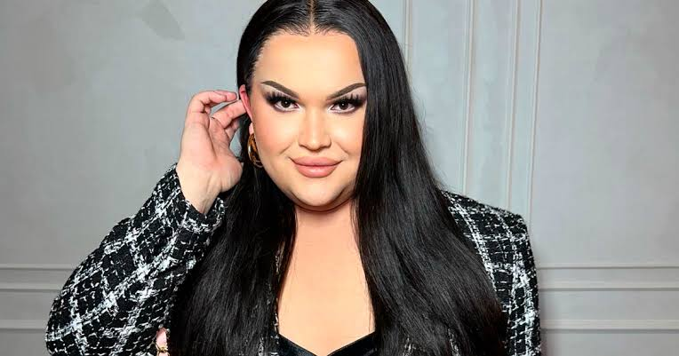
FASHION · BEAUTY · PERSONALITY
01 — ABOUT HIM
Кто такой Игорь?
Игорь Синяк — русскоязычный блогер и медийная личность, получивший известность благодаря интернет-проектам, видео о красоте, макияже и необычному стилю.
Со временем его публичный образ стал связан с миром моды, дизайнерских вещей, люксовых аксессуаров и эстетики.
Его история интересна изменением контента: от интернет-шоу до публикаций о моде, путешествиях и предметах роскоши.
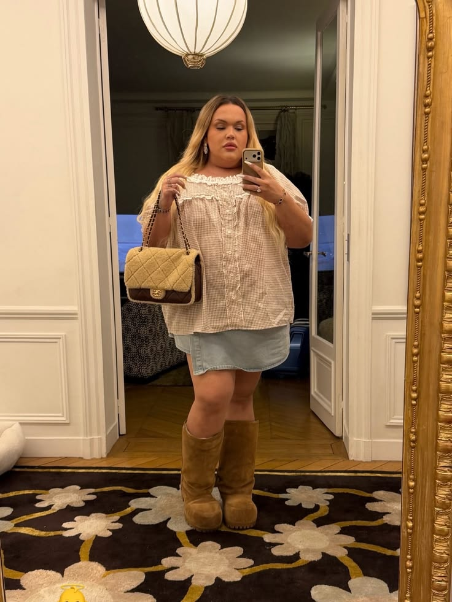
02 — EARLY YEARS
Детство и начало пути
По биографическим публикациям, Игорь родился в Краматорске. В детстве его семья переехала в Воркуту.
Позднее он начал развивать собственное присутствие в интернете и искать свой формат общения с аудиторией.
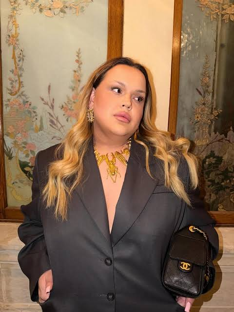
03 — BLOGGING
Первые шаги в интернете
В 2011 году Игорь начал развивать YouTube-канал и интернет-проект «Вся правда шоу», известный также как ВПШ.
Проект привлёк внимание зрителей благодаря обсуждению интернет-персон и провокационной подаче.
Позднее блогер стал уделять больше внимания beauty-тематике, макияжу и личному стилю.
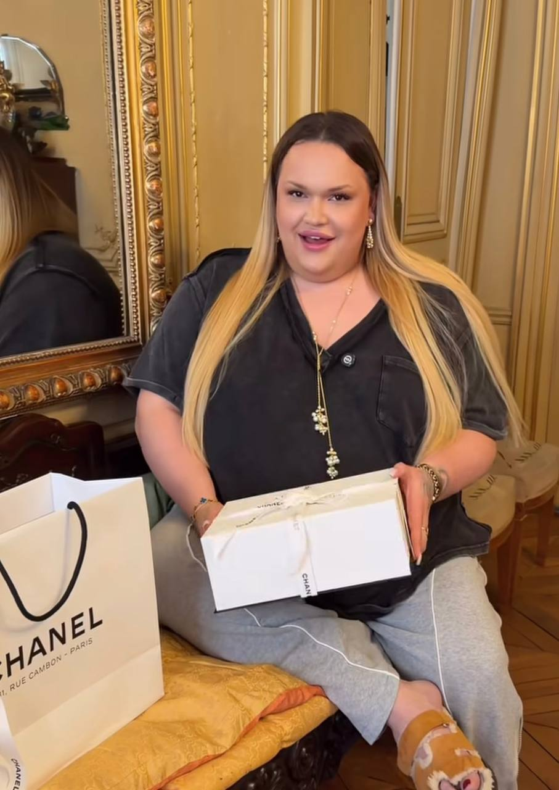
04 — BEAUTY & FASHION
Мода и собственный бренд
В 2017 году Игорь запустил SINYAK COSMETICS. Это стало одним из заметных этапов его деятельности за пределами обычного блогинга.
В его контенте всё больше места занимали косметика, образы, дизайнерская одежда, аксессуары и люксовые бренды.
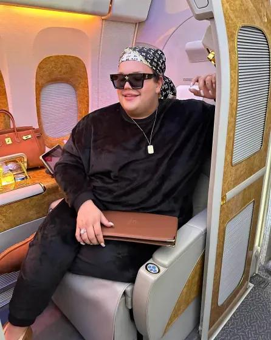
05 — MUSIC
Музыка и перемены
В 2021 году Игорь объявил о закрытии YouTube-канала и начал уделять внимание другим творческим направлениям.
Среди его музыкальных работ — «Двигай!», выпущенная в 2021 году, и проект «Музыка для взрослых» 2024 года.
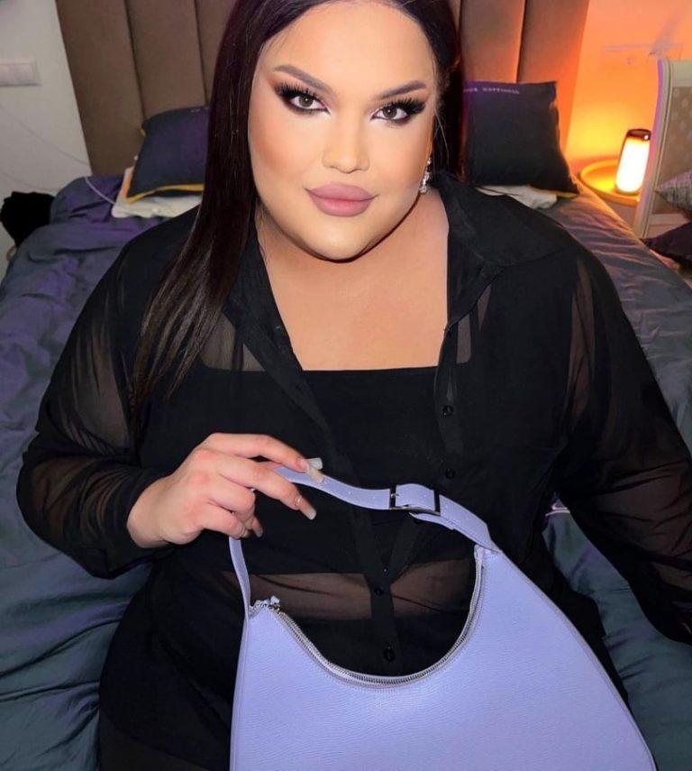
06 — LIFE IN FRANCE
Новая жизнь во Франции
В 2022 году Игорь покинул Россию. В последующие годы его публикации стали связаны с жизнью во Франции, модой и коллекционированием аксессуаров.
Париж стал важной частью его нового публичного образа.
PERSONALITY & STYLE
Фотогалерея
Образы и моменты из публичной жизни Игоря
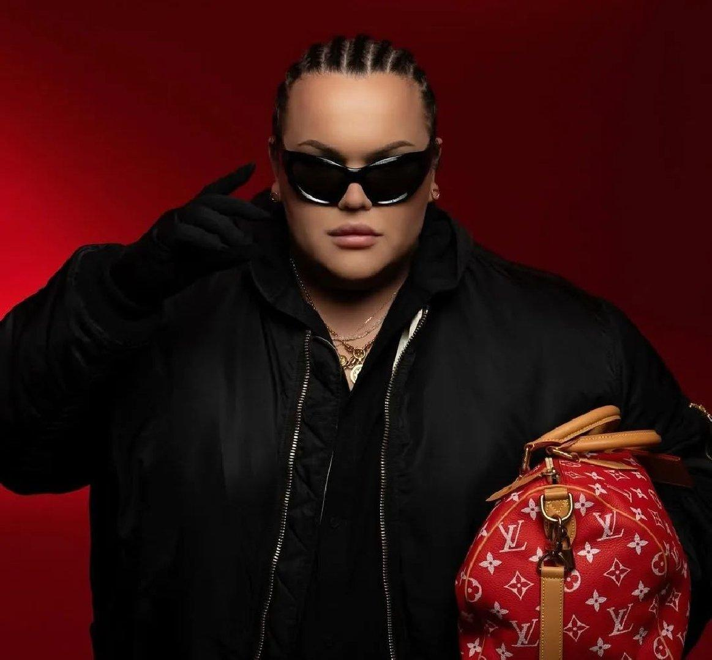
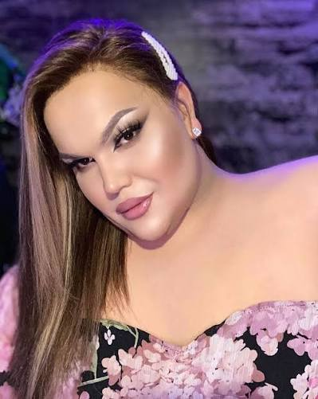
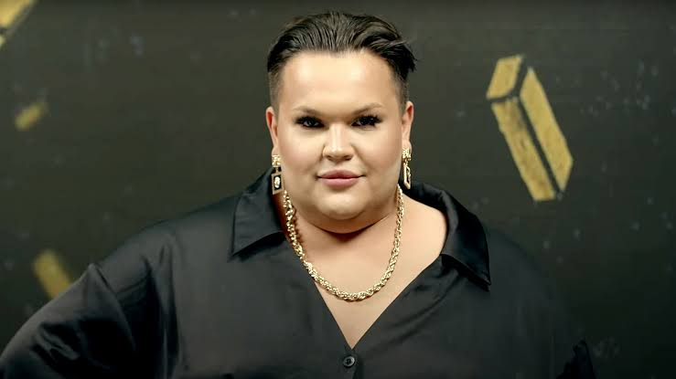
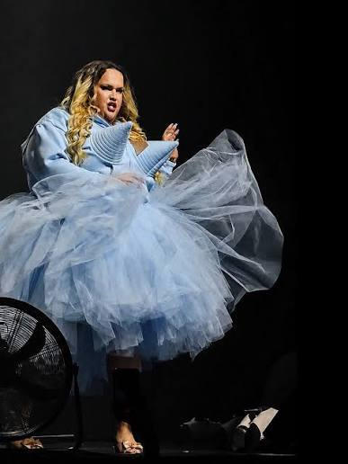
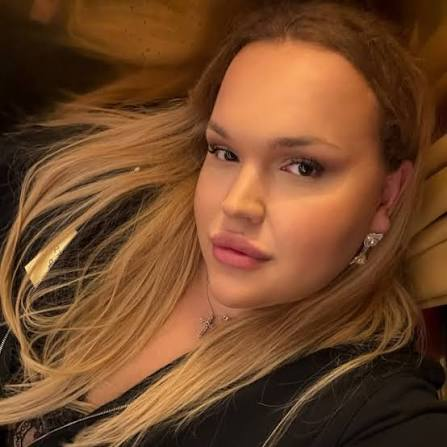
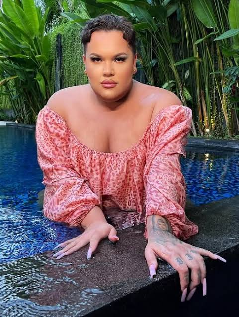
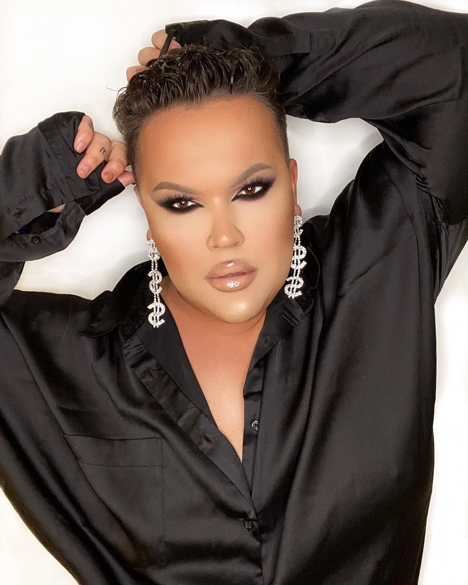
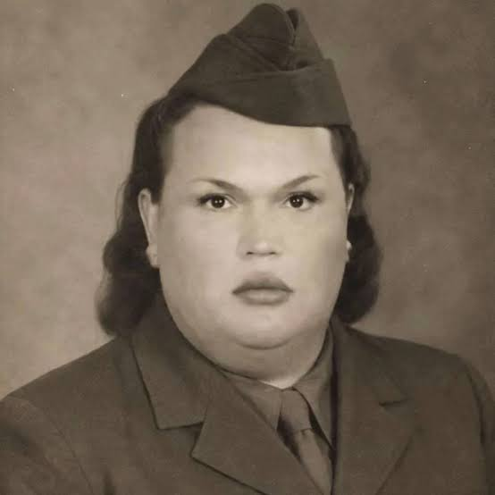
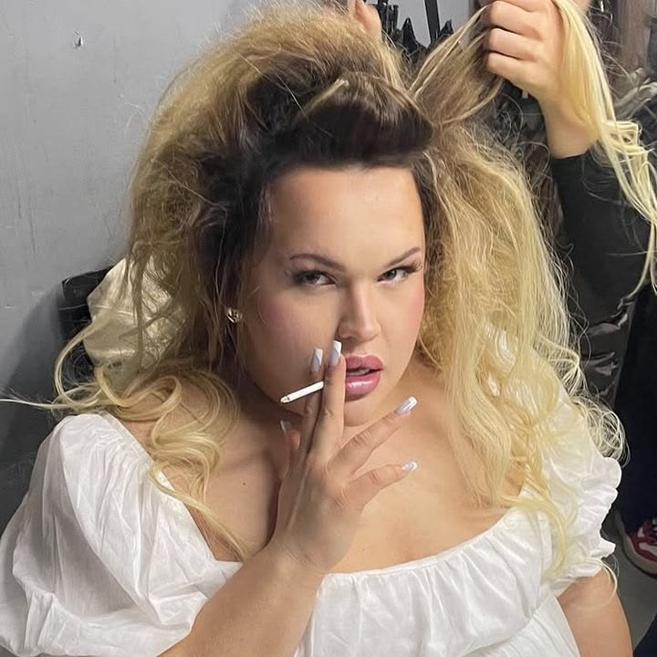
THE TIMELINE
Основные этапы
Начало YouTube-деятельности и развитие ВПШ.
Запуск SINYAK COSMETICS.
Новый творческий этап и музыкальные работы.
Переезд из России во Францию.
Выход проекта «Музыка для взрослых».
RESEARCH & REFERENCES
Источники информации
Материалы СМИ, биографические публикации и интервью, использованные при подготовке проекта.
Аргументы и факты
Биографическое досье: детство, карьера, ВПШ и музыкальная деятельность.
Читать материал ↗24СМИ
Биография блогера и история его становления в интернете.
Читать материал ↗Осторожно Media
Интервью о коллекции Birkin, ВПШ, карьере и жизни во Франции.
Читать материал ↗Doberman.media
Разбор интервью с Ксенией Собчак и истории коллекционирования сумок.
Читать материал ↗Фонтанка
Материал о происшествии в Париже и комментариях блогера.
Открыть издание ↗Le Parisien
Французское освещение происшествия и первоначальные сведения о похищенном имуществе.
Открыть издание ↗Примечание: отдельные биографические сведения в публикациях различаются. В частности, год рождения указывается неодинаково.